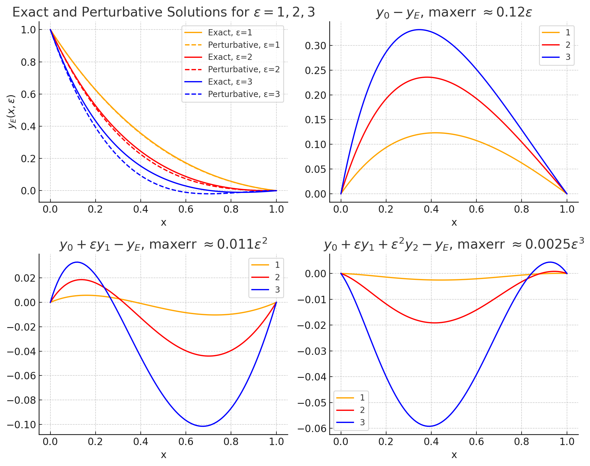
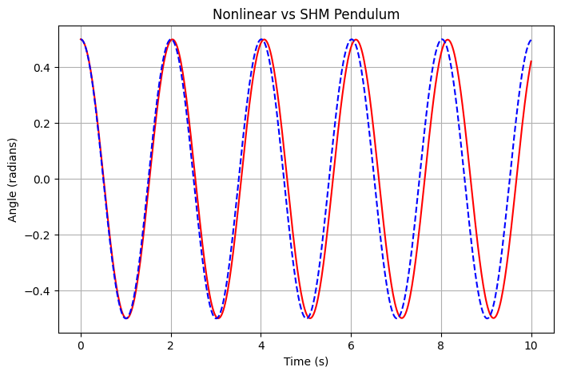
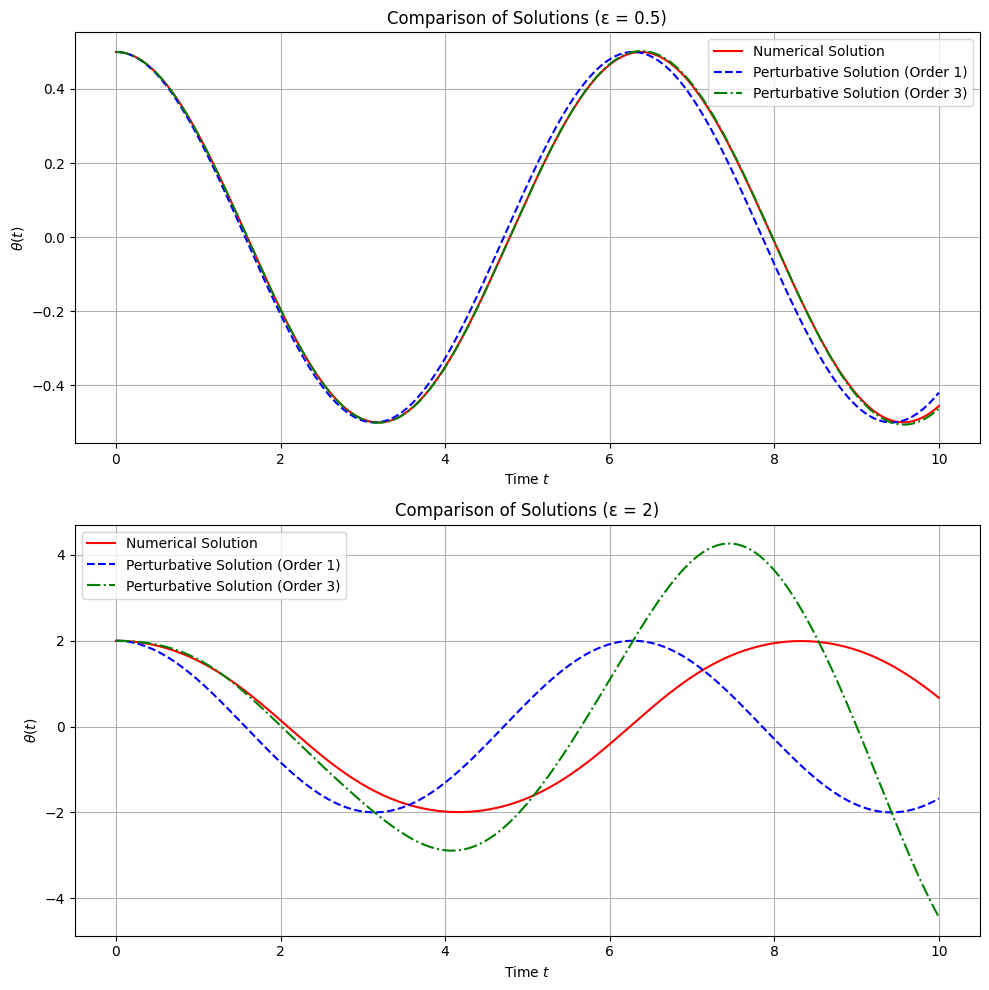

Solving the Non-Linear Pendulum#
Fig. 1 Free force diagram of a hanging pendulum. Note that while the angle is labeled as \(\alpha\) in this diagram, the derivation below assumes \(\theta = \alpha\).#
The non-linear pendulum equation is given by:
where:
\(\theta(t)\): Angular displacement,
\(g\): Gravitational acceleration,
\(L\): Length of the pendulum.
Below, we explore three approaches to solving this equation: analytical, perturbative, and numerical.
The non-linear pendulum equation cannot generally be solved in terms of elementary functions. However we can use different methods to understand how to characterise it’s behaviour.
Analytical Methods#
Energy Conservation#
The total mechanical energy \(E\) of the pendulum is the sum of its kinetic energy (\(T\)) and potential energy (\(U\)):
Kinetic Energy: The kinetic energy arises from the motion of the pendulum bob. If the angular displacement of the pendulum is \(\theta\) and the angular velocity is \(\dot{\theta} = \frac{d\theta}{dt}\), the kinetic energy is given by:
\[T = \frac{1}{2} I \dot{\theta}^2,\]where \(I = mL^2\) is the moment of inertia for a point mass \(m\) at a distance \(L\) from the pivot. Substituting for \(I\), the kinetic energy becomes:
\[T = \frac{1}{2} mL^2 \dot{\theta}^2.\]Potential Energy: The potential energy depends on the height of the pendulum bob relative to its lowest point. For an angular displacement \(\theta\), the vertical displacement \(h\) of the bob from its lowest position is:
\[h = L(1 - \cos\theta).\]The corresponding potential energy is:
\[U = mgh = mgL(1 - \cos\theta).\]
Thus, the total mechanical energy is:
In an ideal pendulum (no damping or external forces), mechanical energy is conserved. Therefore, the total energy \(E\) remains constant during the motion. This conservation law can be expressed as:
where \(E_0\) is the total energy of the system, determined by the initial conditions (e.g., the initial angular displacement \(\theta_0\)).
At the maximum displacement (\(\theta = \theta_0\)), the angular velocity is zero (\(\dot{\theta} = 0\)), so the total energy is purely potential:
Period of Oscillation#
Suppose that the pendulum is described by the nonlinear second-order differential equation:
We consider the oscillations under the following initial conditions:
The angle \({\theta _0}\) is the amplitude of oscillation.
The order of the equation can be reduced by finding a suitable integrating factor. Multiply this equation by \(\frac{{d\theta }}{{dt}}\), leading to:
After integration, we obtain the first-order differential equation:
Using the initial conditions, the constant \(C\) is found as:
The equation then becomes:
Using the double angle identity:
this simplifies to:
After integrating:
Introducing the substitution \(\sin {\frac{{{\theta _0}}}{2}} = k\) and \(\sin \frac{\theta }{2} = k\sin \phi\), the equation becomes:
Lets look at the limits of integration, the passage of the arc from the lowest point \(\alpha = 0\) to the maximum deviation \(\alpha = \alpha_0\) corresponds to a quarter of the oscillation period \(\frac{T}{4}\). It follows from the relationship between the angles \(\alpha\) and \(\theta\) that \(\sin \theta = 1\) or \(\theta = \frac{\pi}{2}\) at \(\alpha = \alpha_0\).
Therefore, we obtain the following expression for the period of oscillation of the pendulum:
The integral on the right cannot be expressed in terms of elementary functions. It is the so-called complete elliptic integral of the first kind:
We can see how this looks with a plot:
Elliptic Function
import numpy as np
import matplotlib.pyplot as plt
from scipy.special import ellipk
# Generate k values from 0 to 1 (excluding 1)
k_values = np.linspace(0, 0.99, 500)
elliptic_values = ellipk(k_values**2)
# Plotting
plt.figure(figsize=(8, 6))
plt.plot(k_values, elliptic_values, lw=2)
plt.title('Complete Elliptic Integral of the First Kind', fontsize=14)
plt.xlabel(r'$k$', fontsize=12)
plt.ylabel(r'$K(k)$', fontsize=12)
plt.grid(True, alpha=0.5)
plt.show()
What is also interest is that \(K(k)\) can also be represented as a power series:
where the double factorials \(\left(2n - 1\right)!!\) and \(\left(2n\right)!!\) denote the product, respectively, of odd and even natural numbers.
Note that if we restrict ourselves to the zero term of the expansion, assuming that \(K(k) \approx \frac{\pi}{2}\), we obtain the known formula for the period of small oscillations:
Further terms of the series for \(n \ge 1\) allow consideration of the anharmonicity of the oscillations of the pendulum and the nonlinear dependence of the period \(T\) on the oscillation amplitude \(\alpha_0\).
Higher-order terms account for anharmonicity and the nonlinear dependence of \(T\) on \({\theta_0}\).
Perturbative Methods#
Introduction to perturbation#
Lets look at a perturbation series solution of the equation:
This problem has a closed-form exact solution, which is a linear combination of homogeneous solutions plus a particular solution:
The coefficients \(c_1,\, c_2\) can be determined from the boundary conditions of the system, lets pick some simple boundary conditions here:
NB we could pick intital conditions (e.g. \(y(0), \,y'(0)\)), this is just a choice!
So we find here:
From these:
This solution can be used to test the convergence of the perturbative solution.
Perturbative Solution#
Now lets assume a series solution to \(y(x)\) which also depends on the perturbative parameter \(\varepsilon\), we can do this in the form of some Taylor style series expansion in \(\varepsilon\), which in the limit of \(\varepsilon \rightarrow 0\) will produce just one solution \(y_0(x)\) which satisfies \(y_0(x)'' = 1\):
Substituting into the differential equation:
Applying boundary conditions, which is crucial to solving these problems:
Note that we apply these boundary conditions order by order, so the easiest way to think about these here is to have the zeroth order ones slightly different to the first order and higher ones - again this is a choice!
Sorting by Powers of \(\varepsilon\)#
Order \(\varepsilon^0\):
Solving gives:
Order \(\varepsilon^1\):
Solution:
Using boundary conditions:
Thus:
Order \(\varepsilon^2\):
Substituting \( y'_1(x) \):
Integrating twice:
Using boundary conditions:
Thus:
Observations#
The upper-left panel of the Figure shows the exact solutions for \(\varepsilon = 1, 2, 3\) matched against the pertubative. Despite \(\varepsilon\) being relatively large, the exact solutions vary smoothly and linearly with \(\varepsilon\), suggesting that the perturbation series in powers of \(\varepsilon\) might be accurate.
The remaining panels plot the error of the 0th, 1st, and 2nd-order perturbation series approximations. Key observations:
The 0th-order series has a maximum error proportional to \(\varepsilon\).
The 1st-order series has a maximum error proportional to \(\varepsilon^2\).
The 2nd-order series has a maximum error proportional to \(\varepsilon^3\).
For \(\varepsilon = 1\), the 2nd-order perturbation series has a maximum error of 0.0025, demonstrating the excellent accuracy of the series across a wide range of \(\varepsilon\).

Numerical Methods#
Numerical integration provides us with some working solutions for any initial conditions and non-linearity.
Remember we need to write the system as a set of coupled first order ODEs, but once we get it into Python, using methods like Runge-Kutta (RK45), the equations can integrated over time. We can compare these results with the small angle SHM solutions:

The solid red line is the full numerical solution and the dashed blue line is the equivalent SHM system.
Non-Linear Pendulum#
Lets think about the non-linear pendulum system
We’ve nondimensionalized time \(t\) by multiplying it by the linear pendulum frequency \( \omega = (g/L)^{1/2} \), i.e. \(t = \omega\,\tau\) , changing the coefficient of \( \sin\theta \) from \( \omega^2 = g/L \) to 1.
In this system we will set up the initial condition as perturbative and given we expect \( \theta(t) \) to oscillate between \( \pm\varepsilon \), we substitute the series:
Substituting into the ODE \( (P) \), and keeping terms through to \( \mathcal{O}(\varepsilon^3) \):
Expanding \( \sin\theta \) using a Taylor series:
we substitute into the ODE:
The cubic term can be expanded as:
Keeping terms up to \( \mathcal{O}(\varepsilon^3) \), only the cubic term \( \varepsilon^3\theta_1^3 \) contributes.
The ODE now becomes:
Order \(\varepsilon^1\):
We can solve this using \(\theta_1(t) = A\cos(t) + B \sin(t)\) but applying the boundary conditions leaves us with:
Order \(\varepsilon^2\):
We can solve this using \(\theta_2(t) = A\cos(t) + B \sin(t)\) but applying the boundary conditions leaves us with:
Order \(\varepsilon^3\):
Expanding \( \cos^3(t) \) using the trigonometric identity:
the equation becomes:
Thus, the ODE is:
We can solve this with homogeneous and particular solution method of second order ODEs, another way to approach this problem is to use Laplace transforms, however after some work we can find:
Final Solution#
The perturbative solution therefore is:
Secular Terms#
The \( \mathcal{O}(\varepsilon^3) \) term grows linearly with \( t \) - we call these secular terms. At large times \( t = \mathcal{O}(\varepsilon^{-2}) \), this term dominates, and the perturbation series loses validity. This growth corresponds to phase drift due to slower nonlinear oscillation compared to linear oscillation. Secular terms therefore can grow without bound and can cause solutions to diverge, which invalidates perturbation theory.
Using a more advanced perturbation method, such as method of multiple scales, we can remove secular terms systematically.
Plotting the solutions#

We notice that the secular terms ruin the pertubative solutions for larger \(\varepsilon\). For low \(\varepsilon\) we see a great agreement between the numerical and the perturbative.
Exercises#
Exercises with ODE solvers
1. Get some numerical solutions out of Python, compare with the linearised solutions and the perturbative solutions.
2. Get a phase portrait out and look at small (SHM solutions are valid) and large angle results (SHM solutions are not valid) - what conclusions can we draw?
3. How could we include damping in this system now? Add this to your code and compare.
4. Looking at the time period, add more perurbative terms into the expression to show how it changes for larger and larger \(\theta_0\).
5. Redo the perurbative solutions around \(\theta_0 = \pi/2\).